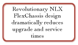
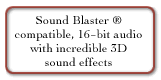
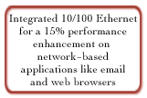

Raising the Power for Corporate Desktops
The newest members of the Bravo MS family are fueled by today’s most advanced and powerful technology making them the ideal solution for the high-end corporate user in the industry. The Bravo MS offers Intel® Pentium® II processors and Intel Pentium processors with MMX™ technology.. The Pentium II processor systems feature Intel's most feature rich core logic, the 440LX AGPset, which was designed to fully utilize the Pentium II processor as well as optimize the Accelerated Graphics Port (AGP) which brings faster and better graphics to the system.
- The Bravo MS is the easiest PC to be around, upgrade, manage and service, due to the push-button FlexChassis, the industry’s first NLX design
- The Bravo MS is easy to be around with AST's exclusive System Noise Reduction (SNR) technology.
- The Bravo MS makes is easy to manage your data and assets with Intel LANDesk™ 3.0 and McAfee® VirusScan™ and WebScan™.
- The Bravo MS is the answer to all your business desktop needs.

Bravo MS Resources:
- Bravo MS Product Specifications
- Bravo MS Options
- Bravo MS 6000 Information Chart
- Bravo MS MMX Information Chart
- Bravo MS 5200
Product information PDF format:
Buying AST
- Business customers can request information on our line of Bravo business desktop computers, Ascentia notebooks, or Manhattan servers, simply by filling out this on-line form
- Reseller partners can view sales information on AST Interchange, the premier reseller information site on the Internet. Through AST Interchange, resellers can view product catalogs, marketing programs, and the most current news and information available.


